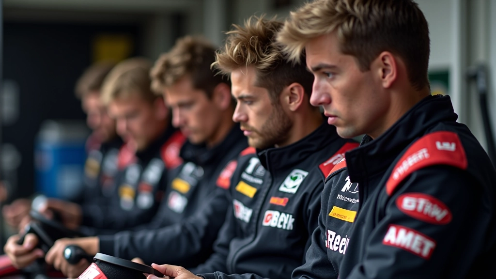

لماذا يهم تقسيم الأدوار
في سباقات التحمل، ما تفعله في الساعة الأولى يؤثر على كل شيء يأتي بعده. الفريق القوي يعرف بالضبط من يفعل ماذا، ومتى يفعله. كل سائق لديه مهمة واضحة، وكل عضو في الفريق يعرف دوره. هذا يحول الفوضى المحتملة إلى نظام منظم.
تقسيم الأدوار ليس فقط عن الكفاءة — إنه عن الثقة. عندما تعرف أن زميلك يتعامل مع الإطارات، يمكنك التركيز على القيادة. عندما يعرف السائق التالي أنه يحصل على سيارة محضرة بشكل صحيح، يبدأ بثقة. هذا هو الفرق بين فريق يعمل بشكل عشوائي وفريق يعمل بحسابات.
الفكرة الأساسية
الفريق الفعال يوزع المهام بوضوح ويضمن أن كل عضو مستعد لدوره. لا توجد التباسات، لا توجد ارتجالية — فقط أداء منظم من البداية إلى النهاية.
الأدوار الأساسية في الفريق
لا يوجد فريق تحمل بدون تقسيم واضح للمسؤوليات. عادةً ما تجد ثلاثة أنواع من الأدوار الرئيسية: سائقو السباق، فريق الصيانة، والمنسق الاستراتيجي. كل دور يتطلب مهارات مختلفة وتركيز مختلف تماماً.
سائق السباق يركز على السرعة والاستقرار. فريق الصيانة يتعامل مع الإطارات والوقود والفحوصات السريعة. المنسق يراقب الاستراتيجية الكلية — أوقات التبديل، توقيت التزود بالوقود، متى يدخل السائق التالي. الجميع يعملون معاً، لكن كل شخص يعرف بالضبط مكانه في الصورة الكبيرة.
السائق الأول
يبدأ السباق ويضع الإيقاع. يحتاج إلى تركيز عالي واستقرار في الأداء خلال أول 45 دقيقة حتى ساعة.
السائق الثاني
يحافظ على الإيقاع ويتكيف مع حالة السيارة. هذا السائق يحتاج إلى خبرة في التعامل مع متغيرات السباق.
السائق الثالث (الإنهاء)
يدير المرحلة النهائية ويحافظ على النتيجة. يحتاج إلى هدوء وقدرة على إدارة الضغط النفسي.

الاستعداد النفسي والبدني
الاستعداد الجسدي يبدأ قبل السباق بأسابيع. كل سائق يحتاج إلى لياقة قلبية جيدة وقوة في الجزء العلوي من الجسم. السباقات طويلة — الساعات تضيف ضغطاً حقيقياً على الرقبة والكتفين والظهر. تمارين الرقبة مهمة جداً. لا تنس أيضاً التدريب على التحمل النفسي.
قبل السباق بساعة أو ساعتين، كل سائق يحتاج إلى روتين تركيز خاص به. قد يكون بعض الناس يفضلون الهدوء، والبعض الآخر يفضل الموسيقى. ما يهم هو أن يصل كل سائق إلى منطقة التركيز قبل أن يجلس خلف عجلة القيادة. هذا ليس ترف — إنه ضرورة.
نصيحة عملية: قم بإنشاء قائمة تحقق لكل سائق قبل دخوله السيارة. هل شرب ماء كافٍ؟ هل أجرى تمارين الرقبة؟ هل راجع خط السباق عقلياً؟ هذا يأخذ 10 دقائق فقط لكنه يحسن الأداء بشكل ملحوظ.
التنسيق والتواصل أثناء السباق
أثناء السباق، التواصل هو كل شيء. يجب أن يعرف المنسق بالضبط متى ستدخل السيارة إلى حفرة الصيانة، كم دقيقة سيستغرق التبديل، وكيف تسير أداء السائق الحالي. لا يمكن أن تكون هناك فجوات في المعلومات.
نظام الراديو بين الفريق والسائق ضروري. السائق يبلغ الفريق عن حالة السيارة — هل الإطارات تتدهور؟ هل هناك مشكلة في المحرك؟ الفريق يرد بالإيقاع المتوقع والتعليمات الاستراتيجية. هذا التبادل السريع للمعلومات يمنع الأخطاء ويسمح بالتكيف السريع مع ظروف السباق.
قبل التبديل
المنسق يخبر السائق بموعد التبديل القادم. السائق الجديد يبدأ الإحماء الذهني. فريق الصيانة يتأكد من أن كل شيء جاهز — الإطارات والوقود والأدوات.
أثناء التبديل
السائق الحالي يغادر بسرعة. الفريق ينقل المعلومات الحرجة للسائق الجديد — حالة الإطارات، السلوك، الخطوط الأفضل. لا وقت للتفاصيل — فقط المعلومات الأساسية.
بعد التبديل
السائق الجديد يعود إلى الحلبة. السائق السابق يبدأ الانتعاش والتحضير الذهني للدخول القادم. المنسق يراقب الأداء ويعد الخطة التالية.
الأخطاء الشائعة وكيفية تجنبها
حتى الفرق الجيدة تسقط في نفس الفخاخ. الخطأ الأول هو عدم التواضع حول دور كل شخص. تظن أنك تعرف، لكنك لم تتحقق. نتيجة؟ التبديل يستغرق 15 ثانية بدلاً من 10 ثوان. في سباق طويل، هذه الثواني تضيف.
الخطأ الثاني هو الاعتماد الزائد على السائق الأول. نعم، هو قد يكون الأسرع. لكن تحميله كل الضغط يعني أنه سيتعب قبل الآخرين. توزيع الضغط يمدد الأداء. السائق الثاني والثالث ليسا احتياطيين — هم شركاء متساويون في المهمة.
الخطأ الثالث هو عدم التدريب. تتوقع أن يعمل كل شيء بشكل مثالي في السباق الأول. لا يحدث. تحتاج إلى عدة جلسات تدريبية حيث تمارس التبديلات، التواصل، وحل المشاكل السريع. كل تكرار يحسن الوقت والثقة.

الخلاصة: بناء فريق متناسق
تقسيم الأدوار ليس خطة معقدة. إنه شيء بسيط: تعرف من يفعل ماذا، عندما يفعله، وكيف يتواصل مع الآخرين. كل سائق يعرف دوره والاستعداد المطلوب. كل عضو فريق يعرف مسؤولياته. هذا الوضوح يحول الفريق العادي إلى فريق منظم وفعال.
البدء بسيط. حدد الأدوار. ادرب الفريق. اختبر قبل السباق. ثم، خلال السباق، ثق بنظامك. لا ارتجالية، لا فوضى — فقط أداء متسق من الأول إلى الأخير. هذا هو الفرق بين الفريق الذي ينهي السباق والفريق الذي يفوز.
الفريق القوي يبدأ بتقسيم واضح للأدوار. والفريق الناجح يحافظ على هذا التقسيم طوال السباق.
إخلاء المسؤولية
المعلومات المقدمة في هذا المقال مخصصة للأغراض التعليمية فقط. تختلف ظروف السباق والقدرات الفردية بشكل كبير. يُنصح دائماً باستشارة مدربين محترفين وفريق ذي خبرة قبل تطبيق أي استراتيجية جديدة. لا نتحمل المسؤولية عن أي نتائج تترتب على استخدام هذه المعلومات.